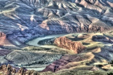
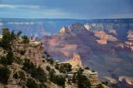
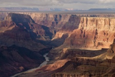

About:
- The Grand Canyon is located in Arizona, United States.
- Floor elevation: approx. 2,600 feet (800 m)
- Length: 277 miles (446 km)
- Width: 4 to 18 miles (6.4 to 29.0 km)
- Age: 5–6 million years
- Rivers: Colorado River



History:
In 1956, the Grand Canyon was the site of the deadliest commercial aviation disaster in history at the time. On the morning of June 30, 1956, two propeller-driven airlines, departed Los Angeles International Airport. Approximately 90 minutes later they collided above the canyon, killing everyone on board these two airplanes. This accident led to the institution of high-altitude airways.
A big sunrise view from Yaki Point. Tilts up from O'neills Butte and the South Kaibab Trail to the Tonto Platform, Isis Temple, and the North Rim in the distance. Video provided by: National Park Services: